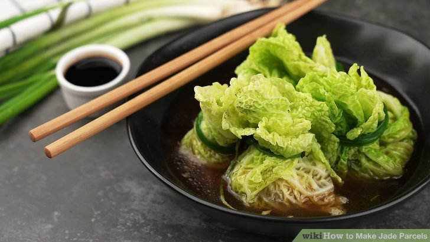

Jade Parcel

Description
Jade parcels are the delicious parcels from Genshin Impact that increase attack for a short time.
Ingredients
- Ground ham
- Vegetable oil
- Freshly minced ginger
- Two cloves of minced garlic
- Salt
- Diced lotus root
- One chopped scallion
- Oyster sauce
- Soy sauce
- Cabbage/li>
- Filling
- Green onion
- Vegetable oil
- Bay leaf
- Diced chili pepper
- Spicy bean paste
- Soy sauce
- Vegetable broth
Steps
- Prepare the filling ingredients. Grind the ham in a meat grinder and mince the ginger and two cloves of garlic.
Dice a lotus root and chop the scallion before you start cooking.
- Add the ground ham into a mixing bowl.
Follow this by adding all the additional filling ingredients,
including 1 teaspoon (4.9 mL) of salt, some oyster sauce, and some soy sauce.
- Mix the ingredients until even. This will be the filling for the parcels.
Cover the bowl until ready to add to the wrap.
- Prepare a pot of salted boiling water and a bowl of ice-cold water. Put this pot on the stove on HIGH until the water is boiling.
The boiling water will soften the cabbage wrap, and the ice-cold water will stop the leaves from cooking.
- Stir the cabbage inside the boiling water. Using tongs to avoid getting burnt, boil the cabbage until a leaf peels off.
- Submerge the cabbage leaf into ice-cold water. This will stop the leaf from cooking so it stays green. Dry the leaves once done.
- Cut the rigid parts of the leaf off. On a cutting board, remove the spine and some of the bottom of the leaf.
These parts are too rigid to move around and need to be removed so the parcel can be closed.
- Add a spoon of filling to the leaf. Wrap the edges of the leaf up and around the filling.
Then seal it off by tying a knot with a green onion softened in boiling water around the jade parcel.
-
Repeat with the other leaves of the jade parcel. Place these in a container and set them aside until ready to steam.
- Stir-fry the minced garlic and ginger in a pot of vegetable oil. Do so until it is fragrant.
- Add the other ingredients.
You will need to add a bay leaf, a star of anise, diced chili peppers, spicy bean paste, and soy sauce.
Stir this until everything is mixed and coated evenly.
- Pour in 4 cups (950 mL) of vegetable broth to the pot. Bring the pot to a boil by covering it with a lid.
Once the broth is boiling, turn the heat down and let the broth simmer for thirty minutes.
- Steam the jade parcels in a separate pot. Do this for about 10-15 minutes while the sauce is cooking.
- Serve the jade parcels. Fill a bowl with the broth and place the steamed parcels inside.
You are done. The broth will give a good flavor to the dumplings